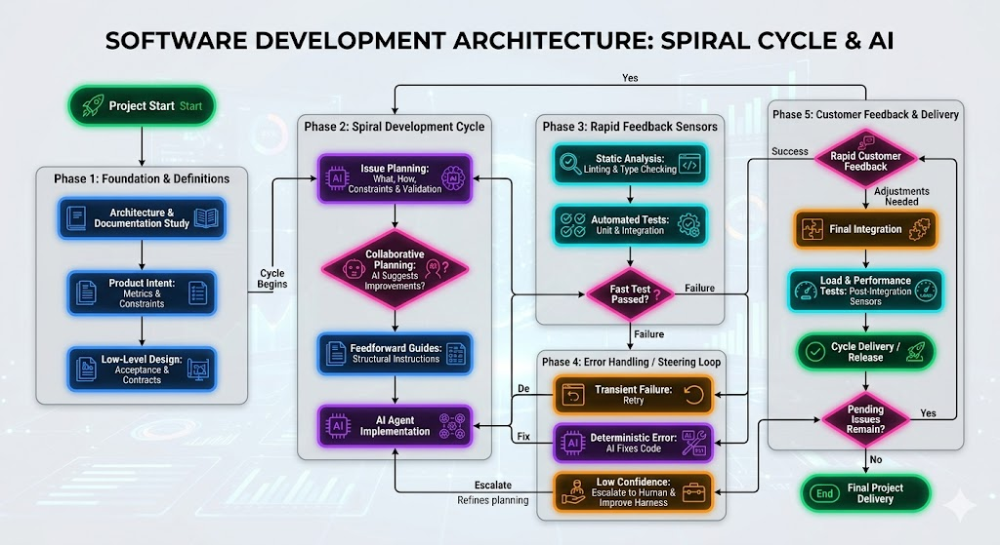

How I Build Software with AI in 2026: My Practical Framework for "Vibe Coding" and Harness Engineering

I've been diving headfirst into so-called 'intuitive programming' [ou 'vibe coding'] and the reality hit me hard: the execution barrier has plummeted. Today, it is perfectly feasible to build a clone of a complex system in a few days using tools and models like Cursor (with Opus or Sonnet), Codex, or Antigravity. Code itself has become a commodity.
In this process, I realized that the mental model of treating AI as an 'intern' — reading every single line of code it generates — simply doesn't work in practice. It's not scalable. However, to avoid low-quality results, I fundamentally changed my mental model: I stopped focusing solely on the prompt and started designing a control system.
Below, I detail exactly how I manage my projects today, combining my personal approach to development with the practices of Harness Engineering and Specification-Driven Development.

Step 1: The Foundation (I never start with code)
Before even kicking off the project, my golden rule is to study the product's architecture. AI agents operating without clear boundaries will try to guess the path, and that inevitably leads to hallucinations.
- Living Documentation: I continuously use the project's documentation to guide the entire workflow. This documentation acts as my single source of truth.
- The "Spec Pack": In traditional software engineering, we don't push anything to production without clear requirements. I do the exact same thing with AI. For every feature, I create a specification package containing the Product Intent (metrics and constraints) and the Low-Level Design, detailing the acceptance criteria and examples of API contracts or events. If the AI doesn't know exactly what is expected of it, my control system will have nothing to validate against.
Step 2: Collaborative Planning
I have always worked with and appreciated the spiral development model, focusing strictly on one feature at a time. However, the real game-changer happens in the moment just before implementation, by utilizing the planning tool integrated into whichever harness is currently in use.
- Execution Plan: I never just show up and say, "create endpoint X." Using the harness's planning feature, I draft an explicit plan that defines: what needs to be done, how it should be done, what the constraints are, and how the outcome will be validated.
- Space for AI: After setting these initial rules, I leverage the tool's capabilities to let the AI analyze the plan and offer its own architectural suggestions. This collaborative planning takes advantage of the model's inferential capacity to anticipate issues before we waste tokens and time generating code.
- Feedforward Guides: Along with the plan structured by the tool, I provide instructions that structurally guide the AI before it takes action (project conventions, baseline scripts, etc.). This drastically increases the chances of it getting it right on the first try.
Step 3: Implementation and Fast Sensors (Keep Quality Left)
With the plan validated, the AI agent goes to work. However, my confidence doesn't stem from the fact that the AI is "smart," but rather from my network of automated Feedback Sensors.
I strictly follow the "Keep quality left" principle—meaning tests must run as early as possible in the cycle. To ensure my agent's repetition loop is incredibly fast, I rely on purely computational sensors.
As soon as the AI generates the code, it instantly hits linting tools, static type checking, and a rigorous battery of unit and integration tests. These sensors run in milliseconds or seconds. If the AI breaks a contract established in my Spec Pack from Step 1, it catches the error and attempts to correct itself automatically.
Step 4: The "Control Loop" (How I handle AI failures)
Let's be clear: AI fails, and the worse the model, the more it will fail. When the error is simple, the AI reads the test logs and fixes it autonomously. But when the agent gets stuck in a loop, makes low-confidence decisions, or produces that dreaded scrambled output, the problem becomes mine.
That's where I step in as a true Harness Engineer. Instead of opening the file and simply patching the line of code the AI messed up, I close the Steering Loop:
- If the AI didn't know how to implement something, I improve the examples in my specification documentation.
- If the error slipped past my tests, I create a new sensor (a new automated test).
- If the applied pattern is incorrect, I add a new architectural rule to my Feedforward guides.
I continuously evolve the control system so that this specific error never depends on my manual intervention again in the future.
Step 5: The Delivery Spiral and Client Feedback
Since I work in a spiral model, whenever an issue successfully passes through my network of automated sensors, I take the result directly to the client for rapid feedback.
If the client requests adjustments, the process immediately returns to my collaborative planning phase.
With the code functionally validated and integrated, I trigger slow and expensive sensors directly in the CI/CD pipeline, running load and performance tests according to need. Constantly running heavy tests would completely ruin the project's cost-benefit ratio and velocity.
The Bottom Line
I stopped being an AI-generated code reviewer. By studying the architecture upfront, creating collaborative plans, and drawing hard boundaries through fast computational sensors, I stepped up to orchestrate the behavior of the system.
'Vibe coding' provides me with incredible speed, but it's my workflow focused on Harness Engineering that ensures the quality of my deliveries.
References & Further Reading
- AkitaOnRails: "37 dias de Imersão em Vibe Coding: Conclusão quanto a Modelos de Negócio"
- Loiane Groner: "Harness Engineering: The Missing Layer in Specs-Driven AI Development"
- The Pragmatic Engineer: "AI Tooling for Software Engineers in 2026"
- The Pragmatic Engineer: "The impact of AI on software engineers in 2026: key trends"
- Article: "Harness engineering for coding agent users"
Comentários
(Configuração do Giscus pode ser necessária com data-repo-id e data-category-id específicos)